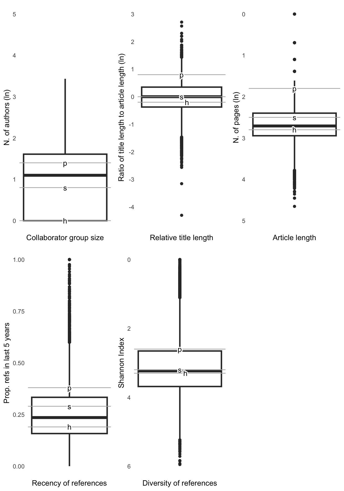
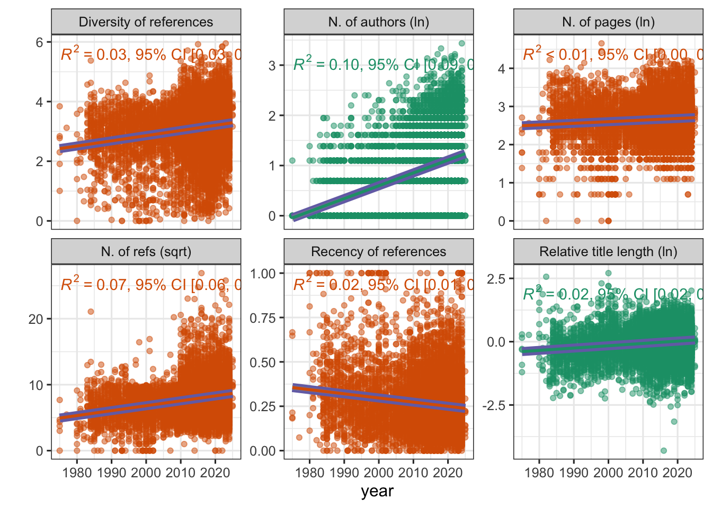
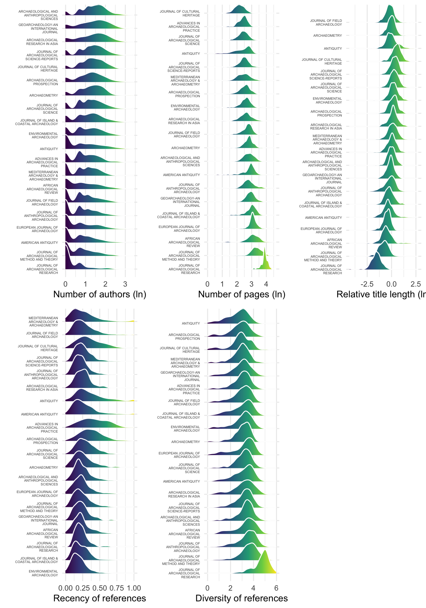

Extracting sunbeams from cucumbers: Reproducibility as a necessity for the future of archaeological science
Introduction
In their paper celebrating the 40th anniversary of this journal Torrence et al (2015) noted that reproducibility was an issue important to the reputation and sustainability of the discipline, and necessary for archaeological science to behave like a science. As part of the celebration of the 50th anniversary, and of Torrence’s leadership of the journal, my contribution revisits these topics of archaeology’s status as a science, this journal’s place in the landscape of archaeological science, and how the journal has responded to a growing recognition of the importance of reproducibility. I first present bibliometric evidence of the position of archaeology as a whole, and this journal in particular, in the hierarchy of the sciences. Next I report on the journal’s progress in supporting reproducible research, and my work doing a new kind of peer review for JAS, one that evaluates the computational reproducibilty of the research submitted for publication.
The question of archaeology’s status as a science usually comes up in the context of what the discipline should or should not be. One of the first landmarks in tackling this question is the debate published by Antiquity between classical archaeologist Jacquetta Hawkes and palaeoanthropologist Glynn Isaac. Hawkes (1968), advocating a humanistic archaeology, was concerned that scientific approaches to archaeology were causing researchers to be “swamped by a vast accumulation of insignificant, disparate facts, like a terrible tide of mud, quite beyond the capacity of any man to contain and mould into historical form”. More optimistic about the integration of science and archaeology, Isaac (1971) counters that “New levels of precision in presenting data and in interpreting them can surely lead to briefer and more interesting technical reports as well as providing the basis for more lively literary portrayals of what happened in prehistory. Expanding on Isaac’s perspective, Binford (1962) argued that archaeology should operate as a science after the model proposed by philosopher Carl Hempel, which prescribed hypothesis-driven approaches, leading to generalizable laws of human behavior. Counter-arguments came from numerous directions, notably Hodder (1985) who rejected the quest for generalisations and instead argued that archaeology should be subjective and reflective, focussed on symbolic and relational meanings of material culture and the historical particularity of past human cultures. These debates, and the many more similar ones summarised by Martinón-Torres and Killick (2013), have become a genre in archaeological writing that can be characterized as mostly based on personal observations, microscopic dissections of a handful of cherry-picked case studies of good or bad practice, and discussion of various philosophers and sociologists.
What has been missing from these debates is a macroscopic observation of what the majority of archaeologists are actually doing, and an empirical comparison to a broad spectrum of relatively harder and softer disciplines. At the ‘hard’ end of the spectrum (e.g. physics and chemistry), scholars more typically share a large set of established set of theories, facts, and methods, facilitating fairly rapid agreement on the validity and significance of new results. At the ‘soft’ end of the spectrum (e.g. economics and psychology), the set of theories, facts, and methods on which there is widespread consensus is smaller, and agreement is slower and less frequently reached about the significance of new findings and the continuing relevance of previous work. Hardness and softness is a controversial distinction, in part because it is often used to imply a rank order of disciplines that encodes legitimacy, productivity, perceived value to society, and worthiness of funding (Editors 2012; Cole 1983). However, independent of these value judgments, empirical analysis of scholarly articles does indicate a spectrum of variation in practice linked to differing degrees of consensus in a discipline, for example in approaches to data visualisation (Cleveland 1984; Smith et al. 2000). Similarly, quantitative analysis of the frequency of positive results (ie. full or partial support for a research hypothesis) in publications is significantly correlated with hardness, consistent with a model where researchers in harder fields more readily accept any result their research produces, while those in softer fields have more freedom to choose which theories and hypotheses to test and how to interpret results (Fanelli 2010). The hard-soft spectrum is also evident in surveys of how researchers view their own work relative to those in other fields (Biglan 1973).
How to measure the hardness or softness of a science?
To objectively quantify the relative hardness or softness of archaeology, as an evaluation of its status as a science, and the place of this journal in context of other archaeology journals, I take a bibliometric approach. This approach is based on Fanelli and Glänzel (2013), who examined the hardness and softness of 12 disciplines using scholarly publication parameters. Fanelli and Glänzel (2013) found a spectrum of statistically significant variation in bibliometric variables from the physical to the social sciences, with papers tending at the softer end of the spectrum tending to have fewer co-authors, use less substantive titles, have longer texts, cite older literature, and have a higher diversity of sources. In Fanelli and Glänzel (2013)’s analysis harder sciences include Space Science, Physics, Chemistry, less hard sciences include social sciences include Psychiatry, Psychology, Economics, Business and General Social Sciences, and the Humanities define the soft end of the spectrum. Following Fanelli and Glänzel (2013), I quantify the number of authors, length of article, relative title length, age of references, and diversity of references for a large sample of peer-reviewed journal articles.
These parameters are useful because of how they signify consensus in a research community. A larger number of authors on a paper reflects collaboration of people working together on a common goal. Collaborators have specialized roles, each of whom has the ability to study a part of the problem with high accuracy and detail, with harder fields having larger groups of collaborators (Zuckerman and Merton 1972). Reflecting this collaboration group size, harder disciplines tend to have higher average numbers of authors on papers. Article length has an inverse correlation with field hardness. In low-consensus, or softer, fields, papers must be longer to present justification, nuance and contextualization of results. The number of substantive and informative words in an article’s title tends to be positively correlated with article length in harder disciplines (Moshe Yitzhaki 2002; M. Yitzhaki 1997), reflecting a focus on empiricism and efficiency that is characteristic of high-consensus disciplines. While Moshe Yitzhaki (2002) removed stop-words (e.g. prepositions, articles, conjunctions, etc.) to calculate article length, in order to generate results for comparison with Fanelli and Glänzel (2013) I follow his method of dividing the total word count of the article title by the total number of pages of the article to compute relative title length.
The age of works cited has long been used as a measure of a field’s hardness (Moed, Van Leeuwen, and Reedijk 1998; Börner 2010), based on the assumption that harder fields assimilate new results more rapidly that softer fields (Price 1970). I calculated a recency of references index for each article (also known as the Price index), which is the proportion of all cited works that were published in the five years preceding the paper. The diversity of references
While Fanelli and Glänzel (2013) analysed papers published in a single year (2012), I found only 303 papers for that same year, and 70% of papers in the sample published after that date. To make efficient use of the available data and ensure robust representation from different areas of archaeology, including those with lower frequencies of journal article publication, I analysed 9697 papers published during 1975-2025. This sample was collected from Clarivate’s Web of Science database by first selecting the Web of Science category ‘Archaeology’ and the Document type ‘article’ (n = 28,871). To focus on journals of broad relevance to most archaeologists, and that are representative of substantial communities of practice, I then filtered the results to keep only articles published in the top-ranking 25 journals according to their h-indices as reported by Clarivate’s Journal Citation Indicator. Finally I excluded journals with less than 100 articles in the database, resulting in 20 journals.
The entire R code (R Core Team 2024) used for all the analysis and visualizations contained in this paper is included in the Supplementary Online Materials at https://doi.org/xxx/xxx/xxx to enable re-use of materials and improve reproducibility and transparency (Marwick 2017). All the figures, tables, and statistical test results presented here can be independently reproduced with the code and data in this compendium (Marwick, Boettiger, and Mullen 2018). The R code is released under the MIT license, the data as CC-0, and figures as CC-BY, to enable maximum re-use.
Results
How does archaeology compare to other fields?
Figure 1 shows the distribution of bibliometric variables for archaeology in context of data from other fields presented by Fanelli and Glänzel (2013). The most striking indicator of archaeology as a hard science is the number of authors, where it is between the social sciences and physics. Archaeology is a close fit with the social sciences in relative title length. It is between the the social sciences and humanities in recency of references and diversity of references. The clearest indicator of archaeology as a soft science is article length where it is similar to the humanities. Overall archaeology does not sit squarely at either end of the hard-soft spectrum. It is generally not a harder science than the social sciences, with the exception of collaborator group sizes.
How has the hardness of archaeology varied over time?

Figure 2 shows how the bibliometric indicators of field hardness have changed of time for archaeology articles. By two measures, the number of authors and relative title length, archaeology has become increasingly harder over time. On the other hand, three metrics indicate that archaeology has become softer (diversity of references, article length and recently of references). Although all the relationships are statistically significant, generally these temporal trends are very weak with low slope values, indicating very slow change over time. Similarly the r-squared values are very low, demonstrating that much of the variability in these metrics is independent of time.
The most striking change over time is in the increase in the number of authors, which has the highest r-squared value of these metrics. One interesting detail evident in Figure 2 is the increase in the range of diversity of references after about 2010. This may be due to some broader changes in academic publishing around this time, such as moves to digital-first continuous publishing, new journals appearing (e.g. Archaeological and Anthropological Sciences in 2009 and Journal of Island & Coastal Archaeology in 2010), and non-archaeology journals becoming more relevant to archaeologists. For example, PLOS ONE received its first impact factor in 2010 and in 2011 Nature’s Scientific Reports began publishing (Malashichev 2017).
How do archaeology journals vary in hardness?

Figure 3 shows the distribution of our bibliometric variables of hardness for each of the 20 journals in the sample. Overall agreement between these bibliometric variables in ranking these journals on a hard-soft spectrum is moderate to strong, with a Kendall’s coefficient of concordance (Wt) value of 0.64 (in a 0-1 range, where 1 is perfect agreement) and a p-value of 2.67 x 10-06. Panel F of Figure 3 shows an overall consensus ranking of all journals in the sample. In this consensus ranking the Journal of Archaeological Science among the top five archaeology journals for hardness. It is placed at the harder end of the hard-soft spectrum especially by the number of pages and relative title length, and to lesser degrees by the number of authors and recency of references. However, according to the diversity of references, the Journal of Archaeological Science is at the middle of the spectrum.
The Journal of Cultural Heritage is the only journal that consistently ranks as hard across all variables, occurring in the top five journals for all five metrics. This journal primarily publishes materials science and computational analyses related to conservation and preservation of historic objects in museums and other collections. Authors of papers in recent issues have affiliations with museums, cultural heritage programs, and chemistry, engineering, and physics departments at European and Chinese universities. Notably, papers in this journal typically do not engage in questions or debates about past human behaviour or culture. The absence of these questions in research published in this journal makes it an outlier here, since these questions are central to a common definition of archaeology as ‘cultural anthropology of the past’, a phrase first found in Leroi-Gourhan (1946) and repeated in widely-used contemporary undergraduate textbooks such as Renfrew, Bahn, and DeMarrais (2024). Most archaeologists would likely be surprised at the decision by Clarivate to include the Journal of Cultural Heritage in their category of archaeology journals, leading to this result in Figure 3 where the hardest archaeology journal publishes papers that are not very archaeological at all because they do not engage with anthropological topics.
The Journal of Archaeological Research is notable because it consistently ranks as soft, ranking as the softest journal for four of our five bibliometric variables. This is a predicable result for a review journal, which is a distinct type of journal dedicated to summarizing, analyzing, and synthesizing existing research in a particular field. The stated aim of the Journal of Archaeological Research is to ‘bring together the most recent international research summaries on a broad range of topics and geographical areas’ (Feinman and Parkinson 2024). A typical article is a long single-authored synthesis of archaeology in a region or on a topic. As the only review journal in this sample, this is a stark contrast to the other journals here that present original research findings, and like the Journal of Cultural Heritage, may be considered an outlier in this sample.
The PCA results in panel G show of Figure 3 that PC1 captures most of the variance in the metrics (71%) and is reasonable proxy for the hard-soft spectrum, with Journal of Cultural Heritage representing the hard extreme on the right and Journal of Archaeological Research representing the soft extreme on the left. The distribution of PC1 values is skewed left, with most of the journals concentrated at the harder end of the spectrum. The distribution of PC2 values reveals additional structure to the data and can be roughly separated into generalist journals in the negative range (e.g. American Antiquity, Antiquity, Advances in Archaeological Practice), and more specialised journals in the positive range (e.g. Environmental Archaeology, Geoarchaeology, Archaeologial Research in Asia, Journal of Island and Coastal Archaeology). The Journal of Archaeological Science sits about midway between these two groups, reflecting its relevance to specialised communities of practice in archaeology, as well as general
Reproducibility: A key measure of how scientific a field is
This macroscopic perspective derived from an analysis of the ways thousands of archaeologists communicate their research has produced a complex picture of archaeology as a science. In the context of a broad spectrum of other research areas, archaeologists behave like social scientists. We are harder than typical social scientists in tending to form larger groups of collaborators more often, and softer in sometimes writing longer articles than more resemble humanities scholarship. The outlook for the future of archaeology is also complex, with three out of five of the bibliometric variables trending towards more humanistic styles of working, but the discipline showing more extreme values in some metrics towards both hard and soft sciences after about 2010. Among archaeology journals, we see distinct communities of practice reflected in the PCA results that are very close together on the hard-soft spectrum, but have minor differences in their communication styles, perhaps due to differences in writing traditions inherited from parent disciplines such as geology and biology.
While these bibliometric variables provide several interesting insights into the status of archaeology as a science, via measurement of consensus, and are important for moving the debate beyond discussions of a small number of case studies, they miss a crucial factor that separates scientific practice from non-science. This is reproducibility, which, according to a report by the US National Science Foundation (Cacioppo et al. 2015), “refers to the ability of a researcher to duplicate the results of a prior study using the same materials as were used by the original investigator. That is, a second researcher might use the same raw data to build the same analysis files and implement the same statistical analysis in an attempt to yield the same results… Reproducibility is a minimum necessary condition for a finding to be believable and informative.” The importance of this factor can be traced to Irish chemist Robert Boyle (1627-1691), best known for his experiments with vacuum pumps (Shapin and Schaffer 2011). Boyle was concerned about the secrecy common among experimentalists in the 17th century and aimed to shift the culture from valuing direct in-person witnessing of scientific demonstrations towards meticulous written communications that were detailed enough to enable a reader to successfully undertake the experiment themselves, independent of the original author.
With many disciplines making increasing use of computationally intensive analyses in recent years there has been renewed interest in reproducibility (LeVeque, Mitchell, and Stodden 2012). In part, this is because computationally intensive research is difficult to communicate within the constraints of the methods section of a traditional journal article — the reader needs also needs the computer code written by the original authors, not just the article text. There is also the broader context of rising pressure to publish in prestigious journals and intense competition for funds that create strong incentives for malpractice in research (Edwards and Roy 2017). These two factors have led to widespread concerns of a reproducibility crisis in many fields (Baker 2016). Estimates of scientific reproducibility in several fields confirm the extent of this problem. Empirical replications of 100 studies published in three psychology journals found that 36% of replications had statistically significant results, compared to 96% of the original studies (Open Science Collaboration 2015). Similar empirical replications of large numbers of social science studies and experiemental economics studies successfully replicated 61% and 62% of their target studies respectively (Camerer et al. 2018; Camerer et al. 2016).
Similarly bleak results come from measurements specifically of the reproducibility of computational analyses of scientific studies. An attempt at reproducing the computational results of 204 papers in Science resulted in success in reproducing the findings for 26% (Stodden, Seiler, and Ma 2018). The computational results of two out of 41 geoscience papers could be fully reproduced on the first attempt (Konkol, Kray, and Pfeiffer 2019). In the biomedical field, code in 1,203 out of 27,271 (4%) notebooks associated with 3,467 publications could be run without errors (Samuel and Mietchen 2024). Statisticians could reproduce 15% of 93 papers (Xiong and Cribben 2023). Economists have been especially active in researching computational reproducibility, with studies indicating successful reproduction of results using code and data provided by authors for 30% of 67 papers (Chang and Li 2015), 14% of 203 papers (Gertler, Galiani, and Romero 2018), 44% of 152 papers (Herbert et al. 2021), 30% of 419 articles (Fišar et al. 2024), and 28% of 168 papers (Pérignon et al. 2024). These efforts confirm that the reproducibility of published research is widely recognised as a cornerstone of rigorous science, and work on evaluating how successful a research community is at generating reproducible results has become a distinctive and important meta-research activity in many fields.
How does archaeology compare to these other fields in terms of reproducibility? Empirical reproducibility has long been valued in field archaeology. Throughout the history of archaeology, well-known sites have been repeatedly revisited to test old hypotheses with new evidence or methods, for example, Olduvai Gorge (Tanzania), Cahokia (USA), Çatalhöyük (Turkey), and Madjedbebe (Australia). Similarly among many experimental archaeologists, empirical reproducibility is a key concern, for example in lithic use-wear identification (Hayes et al. 2017) and the measurement of lithics (Pargeter et al. 2023). To what extent does this concern extend to computational reproducibility among archaeologists?
How reproducible is archaeology? Investigating computational reproducibility
In 2024 the Journal of Archaeological Science introduced a new kind of peer review that has provided an opportunity to tackle this question about computational reproducibility in archaeology. In January 2024 I accepted the position of ‘Associate Editor for Reproducibility’ (AER) for JAS and conducted reproducibility reviews of submissions that mentioned programming languages such as R or Python in the methods sections. A reproducibility review examines the code and data used to generate the results presented in the paper, and attempts to run the authors’ code to reproduce the their results (see Editors (n.d.) for more details about this process). This new AER role is based on similar positions (i.e. ‘data editor’ or ‘reproducibility editor’) that journals in economics (Vilhuber 2019), statistics (Wrobel et al. 2024), astronomy (Muench 2023), ecology (Bolnick, Vines, and Montgomerie 2022), and environmental studies (Rosenberg et al. 2021) have had, in some cases for over a decade. In 2024, three archaeology journals, in addition to JAS, added AERs to their editorial communities: Advances in Archaeological Practice (Marwick 2024, one paper reviewed), Journal of Field Archaeology (Farahani 2024, two papers reviewed), and American Antiquity (Martin 2024, no papers reviewed).

At the time of writing (Feburary 2025) I have completed 47 reproducibility reviews of 25 manuscripts submitted to JAS. Of these, 11 have been published in JAS to date. Seven of these eleven papers fully passed the reproducibility review, resulting in a success rate, by a generous measure, of 63%. Four of the seven papers could be fully reproduced on my first attempt, the others required additional input from the authors. For comparison with reproducibility studies in other fields reported above, the seven fully reproducible papers should be divided by the 25 reviewed for reproducibility, resulting in a 28% success rate. Expanding the denominator to include the total number of research articles published in JAS from May 2024 (when the first article to pass the reproducibility review, Herskind and Riede (2024), was published) to January 2025 (n = 97), which are articles that could have been eligible for reproducibility review had the authors used an open source programming language (e.g. instead of commercial software such as Microsoft Excel or SPSS, etc.) the success rate is 7%. In any case, the computational reproducibility of archaeological research is generally on the low end of the distribution of values obtained from a variety of harder and soft sciences.
Figure 4 shows a summary of basic characteristics of the 25 articles that have been through to the reproducibility review so far. The most commonly used software is R, followed by Python. Results generated with proprietary or closed-source software are out of scope for reproducibility reviews. Several distinct types of analyses are well-represented in this sample, especially geometric morphometry, network statistics, and analyses using artificial intelligence or machine learning algorithms (this includes deep learning and neural networks). Most authors are sharing their code and data files via Zenodo, a non-profit generic research data repository hosted by CERN that accepts any file format and freely assigns all publicly available uploads a DOI to make the files easily and uniquely citable (Peters et al. 2017). In this same category of DOI-issuing, research-grade repositories is OSF (the Open Science Foundation), Figshare, and university repositories. GitHub, a commercial service owned by Microsoft is a code hosting platform that is convenient for collaboration, is also popular among JAS authors, but is a problematic choice because does not offer DOIs or the same commitments to long-term availability of Zenodo. Some authors attached their code and data as journal article supplementary files, but this is a poor choice for long-term availability because these files are typically renamed and converted to different formats during the article production process, making it difficult or impossible for a reader to combine the code and data to reproduce the results.
Panels D and E of Figure 4 summarise the common issues that resulted in irreproducible results. The most common issue was an incomplete compendium. This ranges from missing data files down to missing lines of code, and in most cases seems to be due to carelessness. Unspecified or under-specified dependencies is another common issue that prevents code from running. This refers to the software packages in addition to R or Python that an author used to do specialized analyses and visualisations, (e.g. dplyr for R or numpy for Python). If an author does not clearly specify the name and version number of the packages that they used for their analysis, it can be very time-consuming or impossible to correctly identify these because many packages have functions with similar names, and functions in any one package can change they way they behave as the developers update their package. Other reasons why papers failed the reproducibility review is that the paths to data files were incorrectly specified (likely a result of the author reorganising their compendium after completing their analysis, or omitting data files from the materials submitted for review), and errors returned by functions, which have diverse causes.
How to improve the computational reproducibility of archaeology?
Despite the small number of reproducibility reviews reported on here, there are patterns of common issues that point to simple efforts that have high potential to increase reproducibility. The problem of incomplete materials can be tackled in several ways. First, authors should use a clear and logical folder structure for their code and data. There are many simple templates to guide authors on this, e.g. Marwick, Boettiger, and Mullen (2018), Figueiredo, Scherer, and Cabral (2022), Greenfeld and Community (2023), Cooper and Hsing (2017) and Wilson et al. (2017) Second, for analyses that are not highly time-consuming, authors should re-run their code more than once, and ideally on more than one machine (e.g. by another co-author of the paper), before submission to confirm everything works as expected. This would likely also prevent issues relating to path and function errors. Complex and time-consuming analyses should use pipeline or workflow management tools, e.g. GNU Make, Luigi, Snakemake, or Targets, to document the relationship of the files and folders in a machine-readable format and simplify running and re-running code (Wratten, Wilm, and Göke 2021; Landau 2021). Third, authors should include in their compendium a README document that describes to a reader the folders and files contained in the project. The README file is typically the first file that a reader will look at in a compendium so it should include brief instructions to guide the user to a successful reproduction of the original results (e.g. what order to run the code files in). Fourth, authors should ensure clear, direct and obvious connections between their code and the results they present in their paper. A simple way to do this is to have one code file for each figure and table, and name the code files with the figure or table number and some key words in the caption. Another way some authors are accomplishing this is by using literate programming tools, such as Quarto and Jupyter notebooks (Allaire and Dervieux 2024; Kluyver et al. 2016) that enable the research narrative and code for data analysis to be woven together in one document. Quarto was a popular tool among the JAS papers in the reproducibility review sample, for example, Vernon and Ortman (2024) and Ragno (2024) wrote their entire manuscript using Quarto. These four simple steps have high potential to substantially increase the computational reproducibility of archaeological science.
Our finding that dependencies are a common cause of irreproducible results is consistent with previous studies that have identified this as a widespread weakness in communicating computationally intensive research (Trisovic et al. 2022; Samuel and Mietchen 2024). In our sample, issues relating to dependencies are strongly associated with the use of Python. One possible reason for this is that relative to R, Python uses more package managers, more environments, and deeper dependency chains with more complex inter-dependencies that change more rapidly (Decan, Mens, and Claes 2016; Decan, Mens, and Grosjean 2019; Korkmaz et al. 2020). Another reason may be that there is a bigger and more established community of R users in archaeology (Schmidt and Marwick 2020; Batist and Roe 2024) that highly values code that is easy for others to reuse and has evolved practices to effectively communicate dependencies (e.g. Bilotti et al. 2024; Will and Rathmann 2025). The simplest way for archaeologists to improve here is to write the names and version numbers of the software and packages they used in their README file, as we see in Herskind and Riede (2024) and Monna et al. (2024). For more complex research projects, i.e. those using five or more packages or machine learning algorithms, authors should use dependency management tools to keep track of the packages and version numbers needed to reproduce their results. This is an active area of development, and while there are many tools currently available, the most robust and widely used include renv for R Ragno (2024) and conda and poetry for Python (Anaconda 2023; Crasta, Gannstyf, and Developers 2023). A more comprehensive solution, and the leading best practice for managing dependencies in many computationally intensive fields, is to include a Dockerfile in the compendium (Moreau, Wiebels, and Boettiger 2023). This is a set of a machine- and human-readable instructions that enables a user to recreate the author’s computational environment (including those requirements beyond the R or Python packages) on another computer (Nüst et al. 2020). Dockerfiles are gradually being adopted by archaeologists, see Crema et al. (2024) and Liao et al. (2024) for examples.
References
Allaire, JJ, and C Dervieux. 2024. Quarto: R Interface to ’Quarto’ Markdown Publishing System. https://cran.r-project.org/web/packages/quarto/index.html.
Anaconda, Inc. 2023. “Conda: A Cross-Platform Package and Environment Manager.” https://docs.conda.io/.
Baker, Monya. 2016. “1,500 Scientists Lift the Lid on Reproducibility.” Nature 533 (7604): 452–54. https://doi.org/10.1038/533452a.
Batist, Zachary, and Joe Roe. 2024. “Open Archaeology, Open Source? Collaborative Practices in an Emerging Community of Archaeological Software Engineers.” Internet Archaeology, no. 67 (July). https://doi.org/10.11141/ia.67.13.
Biglan, Anthony. 1973. “The Characteristics of Subject Matter in Different Academic Areas.” Journal of Applied Psychology 57 (3): 195–203. https://doi.org/10.1037/h0034701.
Bilotti, Giacomo, Michael Kempf, Eljas Oksanen, Lizzie Scholtus, and Oliver Nakoinz. 2024. “Point Pattern Analysis (PPA) as a Tool for Reproducible Archaeological Site Distribution Analyses and Location Processes in Early Iron Age South-West Germany.” PLOS ONE 19 (3): e0297931. https://doi.org/10.1371/journal.pone.0297931.
Binford, Lewis R. 1962. “Archaeology as Anthropology.” American Antiquity 28 (2): 217–25.
Bolnick, Dan, Tim Vines, and Bob Montgomerie. 2022. “Ensuring Data and Code Archive Quality: Why and How?” Editorial. From the Editor’s Desk of The American Naturalist. https://comments.amnat.org/2022/03/ensuring-data-and-code-archive-quality.html.
Börner, Katy. 2010. Atlas of Science. The MIT Press. https://mitpress.mit.edu/9780262014458/atlas-of-science/.
Camerer, Colin F., Anna Dreber, Eskil Forsell, Teck-Hua Ho, Jürgen Huber, Magnus Johannesson, Michael Kirchler, et al. 2016. “Evaluating Replicability of Laboratory Experiments in Economics.” Science 351 (6280): 1433–36. https://doi.org/10.1126/science.aaf0918.
Camerer, Colin F., Anna Dreber, Felix Holzmeister, Teck-Hua Ho, Jürgen Huber, Magnus Johannesson, Michael Kirchler, et al. 2018. “Evaluating the Replicability of Social Science Experiments in Nature and Science Between 2010 and 2015.” Nature Human Behaviour 2 (9): 637–44. https://doi.org/10.1038/s41562-018-0399-z.
Chang, Andrew C., and Phillip Li. 2015. “Is Economics Research Replicable? Sixty Published Papers from Thirteen Journals Say ‘Usually Not’.” Finance and Economics Discussion Series, no. 2015-083. https://doi.org/10.17016/FEDS.2015.083.
Cleveland, William S. 1984. “Graphs in Scientific Publications.” The American Statistician 38 (4): 261–69.
Cole, Stephen. 1983. “The Hierarchy of the Sciences?” American Journal of Sociology 89 (1): 111–39. https://doi.org/10.1086/227835.
Cooper, N, and Pen-Yuan Hsing. 2017. A Guide to Reproducible Code in Ecology and Evolution. British Ecological Society. https://nhm.openrepository.com/handle/10141/622618.
Crasta, S., D. Gannstyf, and Poetry Developers. 2023. “Poetry: Python Dependency Management and Packaging.” https://python-poetry.org/.
Crema, E. R., A. Bloxam, C. J. Stevens, and M. Vander Linden. 2024. “Modelling Diffusion of Innovation Curves Using Radiocarbon Data.” Journal of Archaeological Science 165 (May): 105962. https://doi.org/10.1016/j.jas.2024.105962.
Decan, Alexandre, Tom Mens, and Maelick Claes. 2016. “On the Topology of Package Dependency Networks: A Comparison of Three Programming Language Ecosystems.” In Proccedings of the 10th European Conference on Software Architecture Workshops, 1–4.
Decan, Alexandre, Tom Mens, and Philippe Grosjean. 2019. “An Empirical Comparison of Dependency Network Evolution in Seven Software Packaging Ecosystems.” Empirical Software Engineering 24 (1): 381–416. https://doi.org/10.1007/s10664-017-9589-y.
Editors. 2012. “A Different Agenda.” Nature 487 (7407): 271–71. https://doi.org/10.1038/487271a.
———. n.d. “Reproducibility at Journal of Archaeological Science - Journal of Archaeological Science | ScienceDirect.com by Elsevier.” https://www.sciencedirect.com/journal/journal-of-archaeological-science/about/reproducibility-at-journal-of-archaeological-science/reproducibility-at-jas.
Edwards, Marc A, and Siddhartha Roy. 2017. “Academic Research in the 21st Century: Maintaining Scientific Integrity in a Climate of Perverse Incentives and Hypercompetition.” Environmental Engineering Science 34 (1): 51–61.
Fanelli, Daniele. 2010. ““Positive” Results Increase Down the Hierarchy of the Sciences.” PLOS ONE 5 (4): e10068. https://doi.org/10.1371/journal.pone.0010068.
Fanelli, Daniele, and Wolfgang Glänzel. 2013. “Bibliometric Evidence for a Hierarchy of the Sciences.” PLOS ONE 8 (6): e66938. https://doi.org/10.1371/journal.pone.0066938.
Farahani, Alan. 2024. “Reproducibility and Archaeological Practice in the Journal of Field Archaeology.” Journal of Field Archaeology 49 (6): 391–94. https://doi.org/10.1080/00934690.2024.2391623.
Feinman, Gary, and William Parkinson. 2024. “Aims and Scope: Journal of Archaeological Research.” SpringerLink. https://link.springer.com/journal/10814.
Figueiredo, Ludmilla, Cédric Scherer, and Juliano Sarmento Cabral. 2022. “A Simple Kit to Use Computational Notebooks for More Openness, Reproducibility, and Productivity in Research.” PLOS Computational Biology 18 (9): e1010356. https://doi.org/10.1371/journal.pcbi.1010356.
Fišar, Miloš, Ben Greiner, Christoph Huber, Elena Katok, Ali I Ozkes, and Management Science Reproducibility Collaboration. 2024. “Reproducibility in Management Science.” Management Science 70 (3): 1343–56.
Gertler, Paul, Sebastian Galiani, and Mauricio Romero. 2018. “How to Make Replication the Norm.” Nature 554 (7693): 417–19.
Greenfeld, Audrey Roy, and Cookiecutter Community. 2023. “Cookiecutter: A Command-Line Utility That Creates Projects from Project Templates.” https://github.com/cookiecutter/cookiecutter.
Hawkes, Jacquetta. 1968. “The Proper Study of Mankind.” Antiquity 42 (168): 255–62. https://doi.org/10.1017/S0003598X00034451.
Hayes, Elspeth H., Dries Cnuts, Christian Lepers, and Veerle Rots. 2017. “Learning from Blind Tests: Determining the Function of Experimental Grinding Stones Through Use-Wear and Residue Analysis.” Journal of Archaeological Science: Reports 11 (February): 245–60. https://doi.org/10.1016/j.jasrep.2016.12.001.
Herbert, Sylvérie, Hautahi Kingi, Flavio Stanchi, and Lars Vilhuber. 2021. “The Reproducibility of Economics Research: A Case Study.” Working Paper 853. Banque de France. https://www.banque-france.fr/en/publications-and-statistics/publications/reproducibility-economics-research-case-study.
Herskind, Lasse Lukas Platz, and Felix Riede. 2024. “A Computational Linguistic Methodology for Assessing Semiotic Structure in Prehistoric Art and the Meaning of Southern Scandinavian Mesolithic Ornamentation.” Journal of Archaeological Science 165 (May): 105969. https://doi.org/10.1016/j.jas.2024.105969.
Hodder, Ian. 1985. “Postprocessual Archaeology.” Advances in Archaeological Method and Theory, 1–26.
Isaac, Glynn LL. 1971. “Whither Archaeology?” Antiquity 45 (178): 123–29. https://doi.org/10.1017/S0003598X00069283.
Kluyver, Thomas, Benjamin Ragan-Kelley, Fernando Pérez, Brian Granger, Matthias Bussonnier, Jonathan Frederic, Kyle Kelley, et al. 2016. “Jupyter Notebooks–a Publishing Format for Reproducible Computational Workflows.” In Positioning and Power in Academic Publishing: Players, Agents and Agendas, 87–90. IOS press.
Konkol, Markus, Christian Kray, and Max Pfeiffer. 2019. “Computational Reproducibility in Geoscientific Papers: Insights from a Series of Studies with Geoscientists and a Reproduction Study.” International Journal of Geographical Information Science 33 (2): 408–29. https://doi.org/10.1080/13658816.2018.1508687.
Korkmaz, Gizem, Claire Kelling, Carol Robbins, and Sallie Keller. 2020. “Modeling the Impact of Python and R Packages Using Dependency and Contributor Networks.” Social Network Analysis and Mining 10 (1): 1–12. https://doi.org/10.1007/s13278-019-0619-1.
Landau, William Michael. 2021. “The Targets r Package: A Dynamic Make-Like Function-Oriented Pipeline Toolkit for Reproducibility and High-Performance Computing.” Journal of Open Source Software 6 (57): 2959.
Leroi-Gourhan, André. 1946. Archéologie Du Pacifique-Nord: Matériaux Pour l’étude Des Relations Entre Les Peuples Riverains d’asie Et d’amérique. Vol. 47. Travaux Et Mémoires de l’institut d’ethnologie. Paris: Institut d’ethnologie.
LeVeque, Randall J., Ian M. Mitchell, and Victoria Stodden. 2012. “Reproducible Research for Scientific Computing: Tools and Strategies for Changing the Culture.” Computing in Science and Engineering 14 (4): 13–17. https://doi.org/10.1109/mcse.2012.38.
Liao, Lingyu, Zhenfei Sun, Siran Liu, Shining Ma, Kunlong Chen, Yue Liu, Yongtian Wang, and Weitao Song. 2024. “Applying a Mask r-CNN Machine Learning Algorithm for Segmenting Electron Microscope Images of Ceramic Bronze-Casting Moulds.” Journal of Archaeological Science 170 (October): 106049. https://doi.org/10.1016/j.jas.2024.106049.
Malashichev, Yegor. 2017. “From Open Access to Open Science.” Biological Communications, no. 1: 3–5.
Martin, Debra L. 2024. “Editor’s Corner.” American Antiquity 89 (2): 163–64. https://doi.org/10.1017/aaq.2024.31.
Martinón-Torres, Marcos, and David Killick. 2013. “Archaeological Theories and Archaeological Sciences.” http://www.oxfordhandbooks.com/view/10.1093/oxfordhb/9780199567942.001.0001/oxfordhb-9780199567942-e-004.
Marwick, Ben. 2017. “Computational Reproducibility in Archaeological Research: Basic Principles and a Case Study of Their Implementation.” Journal of Archaeological Method and Theory 24 (2): 424450. https://doi.org/10.1007/s10816-015-9272-9.
———. 2024. “Introducing the Associate Editor of Reproducibility.” Advances in Archaeological Practice 12 (2): 61–62. https://doi.org/10.1017/aap.2024.15.
Marwick, Ben, Carl Boettiger, and Lincoln Mullen. 2018. “Packaging Data Analytical Work Reproducibly Using r (and Friends).” The American Statistician 72 (1): 80–88. https://doi.org/10.1080/00031305.2017.1375986.
Moed, Henk F, Th N Van Leeuwen, and Jan Reedijk. 1998. “A New Classification System to Describe the Ageing of Scientific Journals and Their Impact Factors.” Journal of Documentation 54 (4): 387–419.
Monna, Fabrice, Nicolas Navarro, Yury Esin, Tanguy Rolland, Josef Wilczek, Leonard Dumont, Jerome Magail, et al. 2024. “Studying Seriality in Material Culture by Geometric Morphometricsgold Wild Boars from the Arzhan-2 Barrow, Tuva.” Journal of Archaeological Science 169 (September): 106021. https://doi.org/10.1016/j.jas.2024.106021.
Moreau, David, Kristina Wiebels, and Carl Boettiger. 2023. “Containers for Computational Reproducibility.” Nature Reviews Methods Primers 3 (1): 1–16. https://doi.org/10.1038/s43586-023-00236-9.
Muench, August. 2023. “The Roles of Data Editors in Astronomy.” Science Editor 46: 8–10. https://doi.org/10.36591/SE-D-4601-04.
Nüst, Daniel, Vanessa Sochat, Ben Marwick, Stephen J. Eglen, Tim Head, Tony Hirst, and Benjamin D. Evans. 2020. “Ten Simple Rules for Writing Dockerfiles for Reproducible Data Science.” PLOS Computational Biology 16 (11): e1008316. https://doi.org/10.1371/journal.pcbi.1008316.
Open Science Collaboration. 2015. “Estimating the Reproducibility of Psychological Science.” Science 349 (6251): aac4716. https://doi.org/10.1126/science.aac4716.
Pargeter, Justin, Alison Brooks, Katja Douze, Metin Eren, Huw S. Groucutt, Jessica McNeil, Alex Mackay, et al. 2023. “Replicability in Lithic Analysis.” American Antiquity 88 (2): 163–86. https://doi.org/10.1017/aaq.2023.4.
Pérignon, Christophe, Olivier Akmansoy, Christophe Hurlin, Anna Dreber, Felix Holzmeister, Jürgen Huber, Magnus Johannesson, et al. 2024. “Computational Reproducibility in Finance: Evidence from 1,000 Tests.” The Review of Financial Studies 37 (11): 3558–93. https://doi.org/10.1093/rfs/hhae029.
Peters, Isabella, Peter Kraker, Elisabeth Lex, Christian Gumpenberger, and Juan Ignacio Gorraiz. 2017. “Zenodo in the Spotlight of Traditional and New Metrics.” Frontiers in Research Metrics and Analytics 2 (December). https://doi.org/10.3389/frma.2017.00013.
Price, DJS. 1970. “Citation Measures of Hard Science, Technology and Nonscience.” Communication Among Scientists and Engineers, 3–22.
R Core Team. 2024. R: A Language and Environment for Statistical Computing. Vienna, Austria: R Foundation for Statistical Computing. http://www.R-project.org/.
Ragno, Roberto. 2024. “Sheep and Goats Taxonomic Abundance Trends in 1st Millennium CE Southern Italy: Multilevel Bayesian Modelling of NISP Datasets.” Journal of Archaeological Science 171 (November): 106068. https://doi.org/10.1016/j.jas.2024.106068.
Renfrew, Colin, Paul Bahn, and Elizabeth DeMarrais. 2024. Archaeology: Theories, Methods, and Practice. 9th ed. New York: Thames & Hudson.
Rosenberg, David E., Amber Spackman Jones, Yves Filion, Rebecca Teasley, Samuel Sandoval-Solis, James H. Stagge, Adel Abdallah, Anthony Castronova, Avi Ostfeld, and David Watkins. 2021. “Reproducible Results Policy.” Journal of Water Resources Planning and Management 147 (2): 01620001. https://doi.org/10.1061/(ASCE)WR.1943-5452.0001368.
Samuel, Sheeba, and Daniel Mietchen. 2024. “Computational Reproducibility of Jupyter Notebooks from Biomedical Publications.” GigaScience 13 (January): giad113. https://doi.org/10.1093/gigascience/giad113.
Schmidt, Sophie C., and Ben Marwick. 2020. “Tool-Driven Revolutions in Archaeological Science” 3 (1): 1832. https://doi.org/10.5334/jcaa.29.
Shapin, Steven, and Simon Schaffer. 2011. Leviathan and the Air-Pump: Hobbes, Boyle, and the Experimental Life. Princeton University Press.
Smith, Laurence D., Lisa A. Best, D. Alan Stubbs, John Johnston, and Andrea Bastiani Archibald. 2000. “Scientific Graphs and the Hierarchy of the Sciences:: A Latourian Survey of Inscription Practices.” Social Studies of Science 30 (1): 73–94. https://doi.org/10.1177/030631200030001003.
Stodden, Victoria, Jennifer Seiler, and Zhaokun Ma. 2018. “An Empirical Analysis of Journal Policy Effectiveness for Computational Reproducibility.” Proceedings of the National Academy of Sciences 115 (11): 2584–89. https://doi.org/10.1073/pnas.1708290115.
Torrence, Robin, Marcos Martinón-Torres, and Th. Rehren. 2015. “Forty Years and Still Growing: Journal of Archaeological Science Looks to the Future.” Journal of Archaeological Science, Scoping the future of archaeological science: Papers in honour of richard klein, 56 (April): 1–8. https://doi.org/10.1016/j.jas.2015.03.001.
Trisovic, Ana, Matthew K. Lau, Thomas Pasquier, and Mercè Crosas. 2022. “A Large-Scale Study on Research Code Quality and Execution.” Scientific Data 9 (1): 60. https://doi.org/10.1038/s41597-022-01143-6.
Ushey, Kevin, and Hadley Wickham. 2025. Renv: Project Environments. https://rstudio.github.io/renv/.
Vernon, Kenneth B., and Scott G. Ortman. 2024. “A Method for Defining Dispersed Community Territories.” Journal of Archaeological Science 170 (October): 106048. https://doi.org/10.1016/j.jas.2024.106048.
Vilhuber, Lars. 2019. “Report by the AEA Data Editor.” AEA Papers and Proceedings 109: 718–29. https://doi.org/10.1257/pandp.109.718.
Will, Manuel, and Hannes Rathmann. 2025. “Exploring the Utility of Unretouched Lithic Flakes as Markers of Cultural Change.” Scientific Reports 15 (1): 1571. https://doi.org/10.1038/s41598-025-85399-z.
Wilson, Greg, Jennifer Bryan, Karen Cranston, Justin Kitzes, Lex Nederbragt, and Tracy K. Teal. 2017. “Good Enough Practices in Scientific Computing.” PLOS Computational Biology 13 (6): e1005510. https://doi.org/10.1371/journal.pcbi.1005510.
Wrobel, Julia, Emily C Hector, Lorin Crawford, Lucy D’Agostino McGowan, Natalia da Silva, Jeff Goldsmith, Stephanie Hicks, et al. 2024. “Partnering with Authors to Enhance Reproducibility at JASA.” Journal of the American Statistical Association, 1–3.
Xiong, Xin, and Ivor Cribben. 2023. “The State of Play of Reproducibility in Statistics: An Empirical Analysis.” The American Statistician 77 (2): 115–26. https://doi.org/10.1080/00031305.2022.2131625.
Yitzhaki, M. 1997. “Variation in Informativity of Titles of Research Papers in Selected Humanities Journals: A Comparative Study.” Scientometrics 38 (2): 219–29. https://doi.org/10.1007/BF02457410.
Yitzhaki, Moshe. 2002. “Relation of the Title Length of a Journal Article to the Length of the Article.” Scientometrics 54 (3): 435–47. https://doi.org/10.1023/A:1016038617639.
Zuckerman, Harriet, and Robert K Merton. 1972. “Age, Aging, and Age Structure in Science.” Higher Education 4 (2): 1–4.